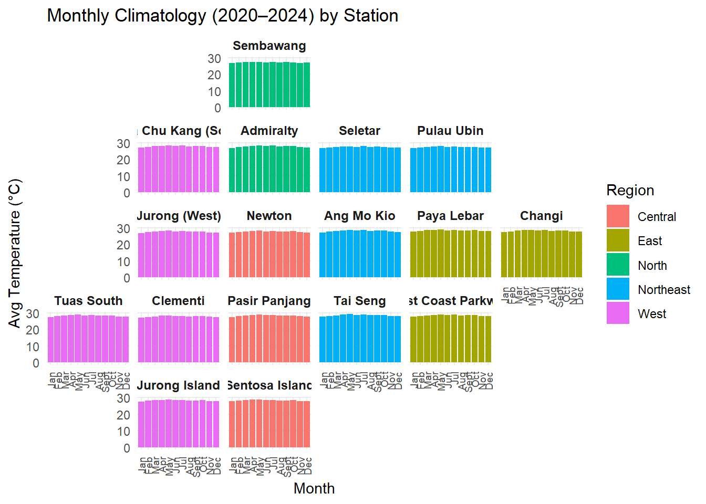
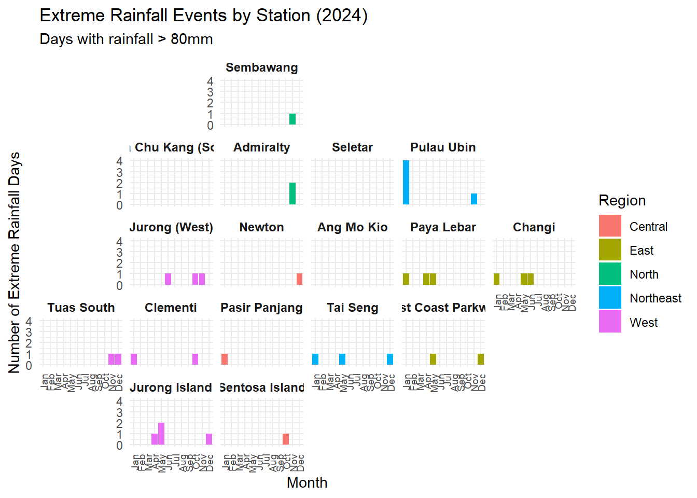
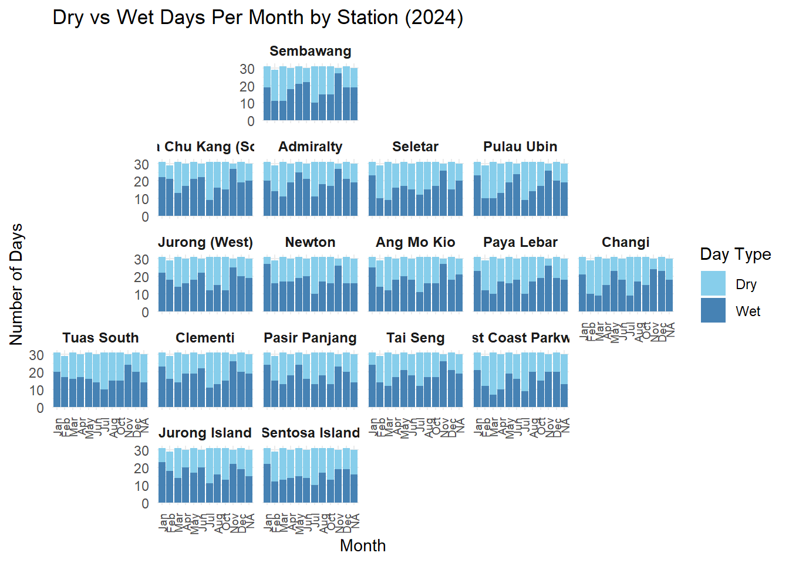
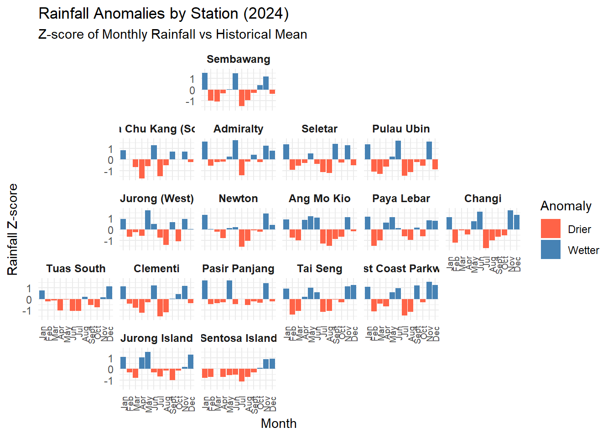
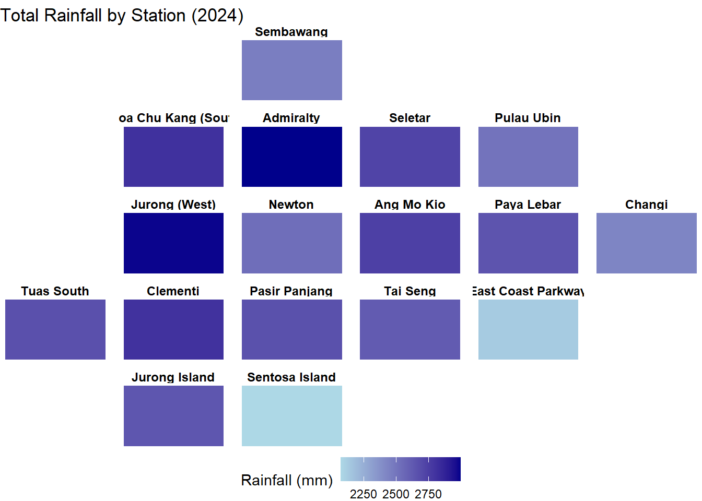
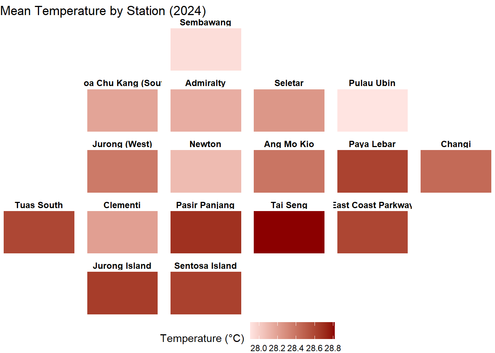

pacman::p_load(tidyverse, geofacet, ggplot2, readr, sf, terra, gstat, automap, tmap, viridis, dplyr, lubridate)Take-home Exercise 3
Overview
To effectively explore and compare weather patterns across different locations in Singapore, this module leverages both geofacet and spatial interpolation techniques.
Data Preparation
The data preparation process is documented here.
Additional Preparation for Spatial Interpolation
Download KML file Master Plan 2019 Subzone Boundary (No Sea) (KML) from data.gov.sg and convert to SHP.
library(sf)
kml_data <- st_read("data/geospatial/MPSZ-2019.kml")
st_write(kml_data, "data/geospatial/MPSZ-2019.shp")Load Required Packages
Import the Dataset
weather_data <-read_csv("data/weather_data_cleaned.csv")Rows: 30532 Columns: 9
── Column specification ────────────────────────────────────────────────────────
Delimiter: ","
chr (2): Region, Station
dbl (6): Daily Rainfall Total (mm), Mean Temperature (°C), Maximum Temperat...
date (1): Date
ℹ Use `spec()` to retrieve the full column specification for this data.
ℹ Specify the column types or set `show_col_types = FALSE` to quiet this message.Prepare Custom Geofacet Grid
We created a custom grid layout to approximate the geographical positioning of 19 weather stations in Singapore.
custom_grid <- data.frame(
name = c("Admiralty", "Sembawang", "Seletar", "Pulau Ubin",
"Ang Mo Kio", "Newton", "Tai Seng", "Paya Lebar",
"Choa Chu Kang (South)", "Jurong (West)", "Clementi",
"Jurong Island", "Tuas South", "Sentosa Island",
"Pasir Panjang", "East Coast Parkway", "Changi"),
code = c("Admiralty", "Sembawang", "Seletar", "Pulau Ubin",
"Ang Mo Kio", "Newton", "Tai Seng", "Paya Lebar",
"Choa Chu Kang (South)", "Jurong (West)", "Clementi",
"Jurong Island", "Tuas South", "Sentosa Island",
"Pasir Panjang", "East Coast Parkway", "Changi"),
row = c(2, 1, 2, 2,
3, 3, 4, 3,
2, 3, 4, 5,
4, 5, 4, 4,
3),
col = c(3, 3, 4, 5,
4, 3, 4, 5,
2, 2, 2, 2,
1, 3, 3, 5,
6),
stringsAsFactors = FALSE
)Geofacet
Geofacet is a visualization technique that arranges multiple small charts in a grid that mirrors the geographic layout of regions, making it easier to compare data across locations while preserving spatial context. In this module, we use geofacet to visualize monthly rainfall patterns and temperature across various weather stations in Singapore. Each panel represents a station’s total rainfall or mean temperature, positioned approximately according to its actual location, allowing users to intuitively observe spatial differences and trends.
1. Monthly Mean Temperature:
# Aggregate to monthly means
weather_monthly <- weather_data %>%
mutate(Month = floor_date(Date, "month")) %>%
group_by(Station, Region, Month) %>%
summarise(`Mean Temperature (°C)` = mean(`Mean Temperature (°C)`, na.rm = TRUE), .groups = "drop")
ggplot(weather_monthly, aes(x = Month, y = `Mean Temperature (°C)`, color = Region)) +
geom_line(size = 1) +
facet_geo(~ Station, grid = custom_grid) +
theme_minimal() +
labs(title = "Monthly Mean Temperature by Station",
x = "Month", y = "Mean Temperature (°C)") +
theme(strip.text = element_text(size = 9, face = "bold"),
axis.text.x = element_text(angle = 45, hjust = 1))Warning: Using `size` aesthetic for lines was deprecated in ggplot2 3.4.0.
ℹ Please use `linewidth` instead.Note: You provided a user-specified grid. If this is a generally-useful
grid, please consider submitting it to become a part of the geofacet
package. You can do this easily by calling:
grid_submit(__grid_df_name__)
2. Monthly Total Rainfall:
# Aggregate to monthly total rainfall
rainfall_monthly <- weather_data %>%
mutate(Month = floor_date(Date, "month")) %>%
group_by(Station, Region, Month) %>%
summarise(`Total Monthly Rainfall (mm)` = sum(`Daily Rainfall Total (mm)`, na.rm = TRUE), .groups = "drop")
# Geofacet plot
ggplot(rainfall_monthly, aes(x = Month, y = `Total Monthly Rainfall (mm)`, color = Region)) +
geom_line(size = 1) +
facet_geo(~ Station, grid = custom_grid) +
theme_minimal() +
labs(title = "Total Monthly Rainfall by Station",
x = "Month", y = "Total Monthly Rainfall (mm)") +
theme(strip.text = element_text(size = 9, face = "bold"),
axis.text.x = element_text(angle = 45, hjust = 1))Note: You provided a user-specified grid. If this is a generally-useful
grid, please consider submitting it to become a part of the geofacet
package. You can do this easily by calling:
grid_submit(__grid_df_name__)
3. Mean Temperature Trend (2020-2024):
# Aggregate to yearly means
weather_yearly <- weather_data %>%
mutate(Year = year(Date)) %>%
group_by(Station, Region, Year) %>%
summarise(`Mean Temperature (°C)` = mean(`Mean Temperature (°C)`, na.rm = TRUE), .groups = "drop")
ggplot(weather_yearly, aes(x = Year, y = `Mean Temperature (°C)`, color = Region)) +
geom_line(size = 1) +
facet_geo(~ Station, grid = custom_grid) +
theme_minimal() +
labs(title = "Yearly Mean Temperature by Station",
x = "Year", y = "Mean Temperature (°C)") +
theme(strip.text = element_text(size = 9, face = "bold"),
axis.text.x = element_text(angle = 45, hjust = 1))Note: You provided a user-specified grid. If this is a generally-useful
grid, please consider submitting it to become a part of the geofacet
package. You can do this easily by calling:
grid_submit(__grid_df_name__)
4. Total Rainfall Trend (2020-2024):
# Aggregate to yearly total rainfall
rainfall_yearly <- weather_data %>%
mutate(Year = year(Date)) %>%
group_by(Station, Region, Year) %>%
summarise(`Total Yearly Rainfall (mm)` = sum(`Daily Rainfall Total (mm)`, na.rm = TRUE), .groups = "drop")
# Geofacet bar chart of yearly total rainfall
ggplot(rainfall_yearly, aes(x = factor(Year), y = `Total Yearly Rainfall (mm)`, fill = Region)) +
geom_col() +
facet_geo(~ Station, grid = custom_grid) +
theme_minimal() +
labs(title = "Yearly Total Rainfall by Station",
x = "Year", y = "Total Rainfall (mm)") +
theme(strip.text = element_text(size = 9, face = "bold"),
axis.text.x = element_text(angle = 45, hjust = 1))Note: You provided a user-specified grid. If this is a generally-useful
grid, please consider submitting it to become a part of the geofacet
package. You can do this easily by calling:
grid_submit(__grid_df_name__)
5. Mean Monthly Temperature by Station (2024)
Filter for desired year (eg. 2024).
# Filter for 2024 and aggregate to monthly means
weather_2024_monthly <- weather_data %>%
filter(year(Date) == 2024) %>%
mutate(Month = floor_date(Date, "month")) %>%
group_by(Station, Region, Month) %>%
summarise(`Mean Temperature (°C)` = mean(`Mean Temperature (°C)`, na.rm = TRUE), .groups = "drop")
# Geofacet plot for 2024
ggplot(weather_2024_monthly, aes(x = Month, y = `Mean Temperature (°C)`, color = Region)) +
geom_line(size = 1) +
facet_geo(~ Station, grid = custom_grid) +
theme_minimal() +
labs(title = "Monthly Mean Temperature by Station (2024)",
x = "Month", y = "Mean Temperature (°C)") +
scale_x_date(date_labels = "%b", date_breaks = "1 month") +
theme(strip.text = element_text(size = 9, face = "bold"),
axis.text.x = element_text(angle = 45, hjust = 1))Note: You provided a user-specified grid. If this is a generally-useful
grid, please consider submitting it to become a part of the geofacet
package. You can do this easily by calling:
grid_submit(__grid_df_name__)
6. Monthly Total Rainfall by Station (2024)
Filter for desired year (eg. 2024).
# Aggregate to monthly total rainfall for 2024
rainfall_2024 <- weather_data %>%
filter(year(Date) == 2024) %>%
mutate(Month = floor_date(Date, "month")) %>%
group_by(Station, Region, Month) %>%
summarise(`Daily Rainfall Total (mm)` = sum(`Daily Rainfall Total (mm)`, na.rm = TRUE), .groups = "drop")
# Geofacet bar chart with abbreviated month labels
ggplot(rainfall_2024, aes(x = Month, y = `Daily Rainfall Total (mm)`, color = Region)) +
geom_line(size = 1) +
facet_geo(~ Station, grid = custom_grid) +
theme_minimal() +
labs(title = "Monthly Total Rainfall by Station (2024)",
x = "Month", y = "Total Rainfall (mm)") +
scale_x_date(date_labels = "%b", date_breaks = "1 month") +
theme(strip.text = element_text(size = 9, face = "bold"),
axis.text.x = element_text(angle = 45, hjust = 1))Note: You provided a user-specified grid. If this is a generally-useful
grid, please consider submitting it to become a part of the geofacet
package. You can do this easily by calling:
grid_submit(__grid_df_name__)
# Aggregate to monthly total rainfall for 2024
rainfall_2024 <- weather_data %>%
filter(year(Date) == 2024) %>%
mutate(Month = floor_date(Date, "month")) %>%
group_by(Station, Region, Month) %>%
summarise(`Daily Rainfall Total (mm)` = sum(`Daily Rainfall Total (mm)`, na.rm = TRUE), .groups = "drop")
# Geofacet bar chart with abbreviated month labels
ggplot(rainfall_2024, aes(x = Month, y = `Daily Rainfall Total (mm)`, fill = Region)) +
geom_col() +
facet_geo(~ Station, grid = custom_grid) +
theme_minimal() +
labs(title = "Monthly Total Rainfall by Station (2024)",
x = "Month", y = "Total Rainfall (mm)") +
scale_x_date(date_labels = "%b", date_breaks = "1 month") +
theme(strip.text = element_text(size = 9, face = "bold"),
axis.text.x = element_text(angle = 45, hjust = 1))Note: You provided a user-specified grid. If this is a generally-useful
grid, please consider submitting it to become a part of the geofacet
package. You can do this easily by calling:
grid_submit(__grid_df_name__)
7. Monthly Climatology (Average Across Years)
This plot answers the question: “What’s a typical temperature like in each month for each part of Singapore?”
weather_climatology <- weather_data %>%
filter(year(Date) %in% 2020:2024) %>%
mutate(Month_Label = month(Date, label = TRUE, abbr = TRUE)) %>%
group_by(Station, Region, Month_Label) %>%
summarise(`Avg Temp (2020–2024)` = mean(`Mean Temperature (°C)`, na.rm = TRUE), .groups = "drop")
ggplot(weather_climatology, aes(x = Month_Label, y = `Avg Temp (2020–2024)`, fill = Region)) +
geom_col() +
facet_geo(~ Station, grid = custom_grid) +
theme_minimal() +
labs(title = "Monthly Climatology (2020–2024) by Station",
x = "Month", y = "Avg Temperature (°C)") +
theme(strip.text = element_text(size = 9, face = "bold"),
axis.text.x = element_text(angle = 90, vjust = 0.5, hjust = 1, size = 7))Note: You provided a user-specified grid. If this is a generally-useful
grid, please consider submitting it to become a part of the geofacet
package. You can do this easily by calling:
grid_submit(__grid_df_name__)
8. Extreme Rainfall Events Count
Filter for 2024 (or a desired range), then define an extreme rainfall threshold (e.g., > 80mm). This plot shows the frequency of days with heavy rainfall (>80mm, for example).
# Define threshold
extreme_threshold <- 80
# Prepare base data with month labels
extreme_rainfall <- weather_data %>%
filter(year(Date) == 2024) %>%
mutate(Month = floor_date(Date, "month"),
Month_Label = factor(format(Month, "%b"), levels = month.abb)) %>%
filter(`Daily Rainfall Total (mm)` > extreme_threshold) %>%
group_by(Station, Region, Month_Label) %>%
summarise(`Extreme Rainfall Days` = n(), .groups = "drop") %>%
complete(Station, Region, Month_Label = factor(month.abb, levels = month.abb), fill = list(`Extreme Rainfall Days` = 0))
# Plot
ggplot(extreme_rainfall, aes(x = Month_Label, y = `Extreme Rainfall Days`, fill = Region)) +
geom_col() +
facet_geo(~ Station, grid = custom_grid) +
theme_minimal() +
labs(title = "Extreme Rainfall Events by Station (2024)",
subtitle = paste0("Days with rainfall > ", extreme_threshold, "mm"),
x = "Month", y = "Number of Extreme Rainfall Days") +
theme(strip.text = element_text(size = 9, face = "bold"),
axis.text.x = element_text(angle = 90, vjust = 0.5, hjust = 1, size = 7))Note: You provided a user-specified grid. If this is a generally-useful
grid, please consider submitting it to become a part of the geofacet
package. You can do this easily by calling:
grid_submit(__grid_df_name__)
9. Dry vs Wet Days Per Month
# Categorize days as 'Dry' or 'Wet' and count per month
dry_wet_days <- weather_data %>%
filter(year(Date) == 2024) %>%
mutate(Month = floor_date(Date, "month"),
Month_Label = factor(format(Month, "%b"), levels = month.abb),
RainType = ifelse(`Daily Rainfall Total (mm)` > 0, "Wet", "Dry")) %>%
group_by(Station, Region, Month_Label, RainType) %>%
summarise(Days = n(), .groups = "drop")
# Geofacet stacked bar chart
ggplot(dry_wet_days, aes(x = Month_Label, y = Days, fill = RainType)) +
geom_col() +
facet_geo(~ Station, grid = custom_grid) +
scale_fill_manual(values = c("Dry" = "skyblue", "Wet" = "steelblue")) +
theme_minimal() +
labs(title = "Dry vs Wet Days Per Month by Station (2024)",
x = "Month", y = "Number of Days", fill = "Day Type") +
theme(strip.text = element_text(size = 9, face = "bold"),
axis.text.x = element_text(angle = 90, vjust = 0.5, hjust = 1, size = 7))Note: You provided a user-specified grid. If this is a generally-useful
grid, please consider submitting it to become a part of the geofacet
package. You can do this easily by calling:
grid_submit(__grid_df_name__)
10. Rainfall Anomalies (Z-score) plot
# Step 1: Aggregate to monthly total rainfall
rainfall_monthly <- weather_data %>%
mutate(Year = year(Date),
Month = floor_date(Date, "month"),
Month_Label = month(Month, label = TRUE, abbr = TRUE)) %>%
group_by(Station, Region, Month, Year, Month_Label) %>%
summarise(`Monthly Rainfall (mm)` = sum(`Daily Rainfall Total (mm)`, na.rm = TRUE), .groups = "drop")
# Step 2: Calculate monthly mean & SD for each Station + Month_Label (climatology)
rainfall_stats <- rainfall_monthly %>%
group_by(Station, Month_Label) %>%
summarise(
Mean_Rainfall = mean(`Monthly Rainfall (mm)`, na.rm = TRUE),
SD_Rainfall = sd(`Monthly Rainfall (mm)`, na.rm = TRUE),
.groups = "drop"
)
# Step 3: Join and compute Z-score
rainfall_anomalies <- rainfall_monthly %>%
left_join(rainfall_stats, by = c("Station", "Month_Label")) %>%
mutate(Z_Score = (`Monthly Rainfall (mm)` - Mean_Rainfall) / SD_Rainfall)
# Step 4: Plot Z-scores for a specific year (e.g., 2024)
rainfall_anomalies_2024 <- rainfall_anomalies %>%
filter(Year == 2024)
# Plot
ggplot(rainfall_anomalies_2024, aes(x = Month_Label, y = Z_Score, fill = Z_Score > 0)) +
geom_col() +
scale_fill_manual(values = c("TRUE" = "steelblue", "FALSE" = "tomato"), labels = c("Drier", "Wetter")) +
facet_geo(~ Station, grid = custom_grid) +
theme_minimal() +
labs(title = "Rainfall Anomalies by Station (2024)",
subtitle = "Z-score of Monthly Rainfall vs Historical Mean",
x = "Month", y = "Rainfall Z-score", fill = "Anomaly") +
theme(strip.text = element_text(size = 9, face = "bold"),
axis.text.x = element_text(angle = 90, vjust = 0.5, hjust = 1, size = 7))Note: You provided a user-specified grid. If this is a generally-useful
grid, please consider submitting it to become a part of the geofacet
package. You can do this easily by calling:
grid_submit(__grid_df_name__)
11. Hextile Map (Total Rainfall for 2024)
rainfall_total_2024 <- weather_data %>%
filter(lubridate::year(Date) == 2024) %>%
group_by(Station, Region) %>%
summarise(`Total Rainfall (mm)` = sum(`Daily Rainfall Total (mm)`, na.rm = TRUE), .groups = "drop")
ggplot(rainfall_total_2024, aes(x = 1, y = 1, fill = `Total Rainfall (mm)`)) +
geom_tile(color = "white") +
facet_geo(~ Station, grid = custom_grid) +
scale_fill_gradient(low = "lightblue", high = "darkblue") +
theme_void() +
labs(title = "Total Rainfall by Station (2024)",
fill = "Rainfall (mm)") +
theme(strip.text = element_text(size = 9, face = "bold"),
legend.position = "bottom")Note: You provided a user-specified grid. If this is a generally-useful
grid, please consider submitting it to become a part of the geofacet
package. You can do this easily by calling:
grid_submit(__grid_df_name__)
12. Hextile Map (Mean Temperature for 2024)
temperature_mean_2024 <- weather_data %>%
filter(lubridate::year(Date) == 2024) %>%
group_by(Station, Region) %>%
summarise(`Mean Temperature (°C)` = mean(`Mean Temperature (°C)`, na.rm = TRUE), .groups = "drop")
library(ggplot2)
library(geofacet)
ggplot(temperature_mean_2024, aes(x = 1, y = 1, fill = `Mean Temperature (°C)`)) +
geom_tile(color = "white") +
facet_geo(~ Station, grid = custom_grid) +
scale_fill_gradient(low = "mistyrose", high = "darkred") +
theme_void() +
labs(title = "Mean Temperature by Station (2024)",
fill = "Temperature (°C)") +
theme(strip.text = element_text(size = 9, face = "bold"),
legend.position = "bottom")Note: You provided a user-specified grid. If this is a generally-useful
grid, please consider submitting it to become a part of the geofacet
package. You can do this easily by calling:
grid_submit(__grid_df_name__)
Spatial Interpolation
Spatial interpolation is a technique used to estimate unknown values at specific geographic locations based on known values from surrounding areas. In this module, we apply spatial interpolation to predict rainfall at locations where no weather stations are present, using data from nearby stations. This allows us to generate a continuous surface of estimated rainfall across Singapore, filling in spatial gaps and providing a more comprehensive view of rainfall distribution. By integrating spatial interpolation into our visual analytics application, users can gain deeper insights into localized weather patterns and better understand the spatial dynamics of rainfall.
Importing Shapefile
mpsz2019 <- st_read(dsn = "data/geospatial",
layer = "MPSZ-2019") %>%
st_transform(crs = 3414)Reading layer `MPSZ-2019' from data source
`C:\kenyongky\ISSS608-VAA\Take-home_Ex\Take-home_Ex03\data\geospatial'
using driver `ESRI Shapefile'
Simple feature collection with 332 features and 2 fields
Geometry type: MULTIPOLYGON
Dimension: XY
Bounding box: xmin: 103.6057 ymin: 1.158699 xmax: 104.0885 ymax: 1.470775
Geodetic CRS: WGS 84User-defined variables
In this prototype, we compute the total monthly rainfall from Daily Rainfall Total (mm) field for Feb 2024. On the shiny app, users will be able to select the variable and the month and year.
# Summarise rainfall
rain_summary <- weather_data %>%
mutate(Date = ymd(Date)) %>%
filter(month(Date) == 2 & year(Date) == 2024) %>%
group_by(Station) %>%
summarise(MONTHSUM = sum(`Daily Rainfall Total (mm)`, na.rm = TRUE)) %>%
ungroup()
# Extract station coordinates
station_coords <- weather_data %>%
select(Station, Latitude, Longitude) %>%
distinct()
# Join rainfall summary with coordinates
rfdata <- left_join(rain_summary, station_coords, by = "Station")glimpse(rfdata)Rows: 17
Columns: 4
$ Station <chr> "Admiralty", "Ang Mo Kio", "Changi", "Choa Chu Kang (South)"…
$ MONTHSUM <dbl> 153.8, 150.0, 60.2, 207.8, 163.4, 70.6, 141.0, 156.4, 181.6,…
$ Latitude <dbl> 1.4439, 1.3793, 1.3678, 1.3729, 1.3318, 1.3133, 1.3458, 1.25…
$ Longitude <dbl> 103.7854, 103.8500, 103.9823, 103.7224, 103.7762, 103.9620, …Convert to Geospatial Data
rfdata_sf <- st_as_sf(rfdata, coords = c("Longitude", "Latitude"), crs = 4326)Visualising the data
tmap_mode("view")ℹ tmap mode set to "view".tm_shape(rfdata_sf) +
tm_dots(fill = "red")